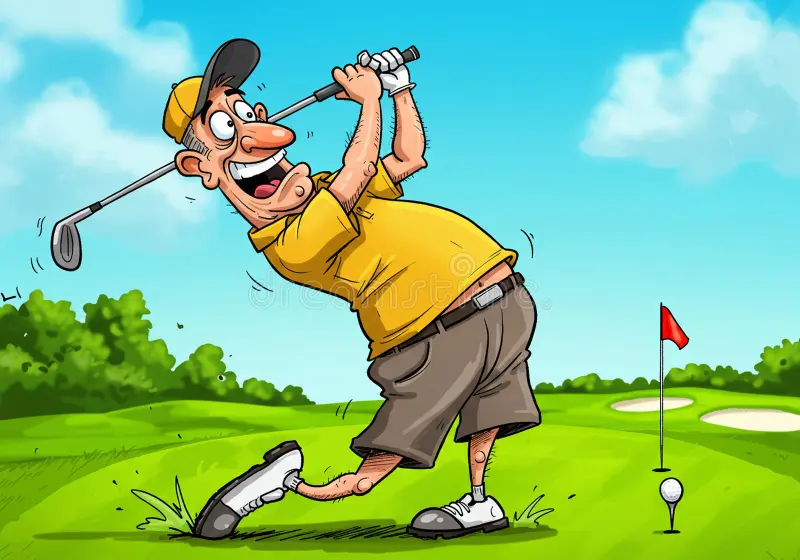

Teams I Follow
I enjoy watching the Golden State Warriors, Arsenal, FC Barcelona, and Jannik Sinner because each has an exciting style of play.
Sports, cooking, and gemstones are a few things I enjoy learning about.

Golf helps me practice patience and focus, while tennis keeps me active and competitive. I like that both sports reward consistency and mental discipline.
I enjoy watching the Golden State Warriors, Arsenal, FC Barcelona, and Jannik Sinner because each has an exciting style of play.
Cooking gives me a creative way to relax. I like trying new recipes, learning techniques, and exploring flavors from different cultures.
I am interested in diamonds and colored gemstones, especially how rarity, origin, craftsmanship, and market demand shape their value.